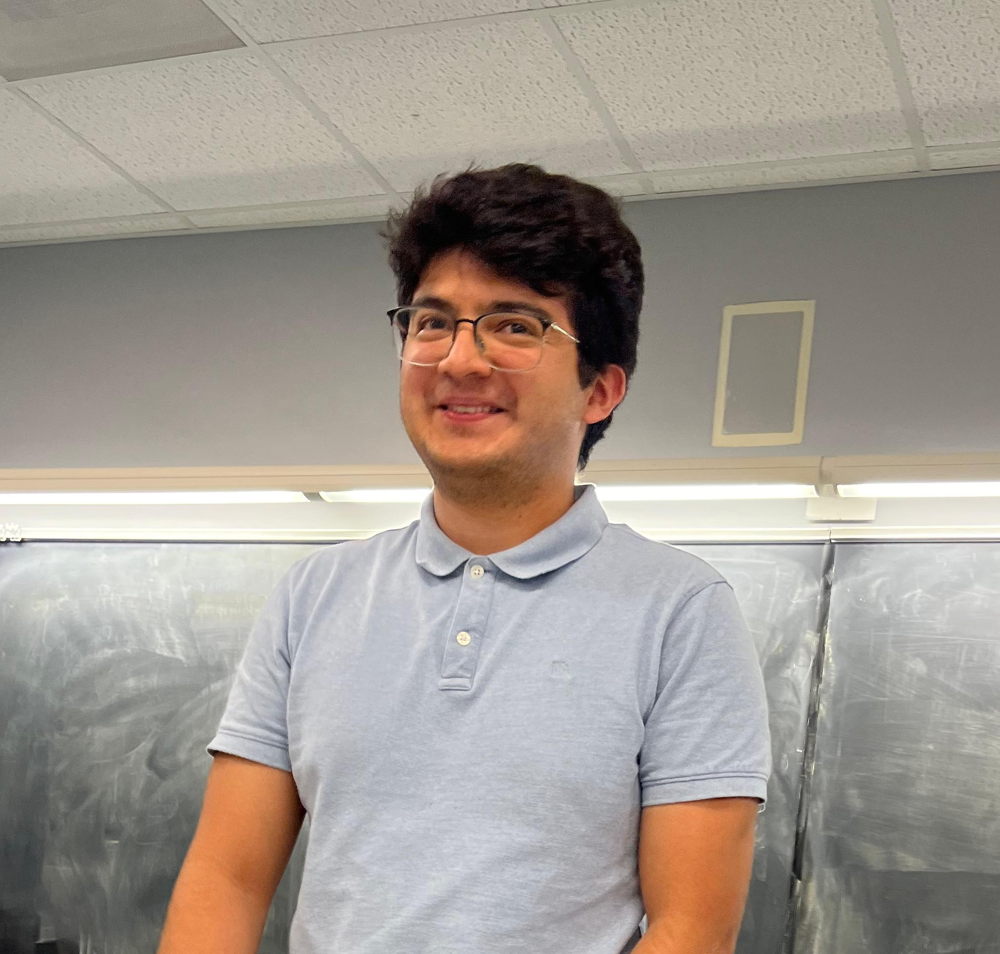

Rodrigo Gonzalez
PhD Candidate
Computational Science and Engineering
Oden Institute for Computational Engineering and Sciences
The University of Texas at Austin
I am a PhD candidate at the Oden Institute for Computational Engineering and Sciences at The University of Texas at Austin working on applied mathematics and computational physics. My work focuses on designing computationally efficient algorithms to simulate phenomena that arise in kinetic theory, plasma physics, and controlled fussion.
Previously, I completed a BS in Applied Mathematics at Emory University (2022).
Research
My research is broadly in computational kinetics and computational physics. I am interested in developing and applying numerical methods to simulate kinetic and plasma systems, with a particular focus on kinetic equations and transport phenomena. The core of my work relies on leveraging insights from the analytical and physical models to ensure accuracy and improve computational efficiency.
Collision Operators
Numerical simulation of Boltzmann and Landau collision operators in both classical and relativistic regimes. This work focuses on developing accurate and efficient discretizations for collisional kinetic equations arising in plasma and gas dynamics.
Low-Rank Methods for Vlasov–Poisson
Development of low-rank tensor methods to efficiently solve the Vlasov–Poisson system, which describes the collisionless evolution of a plasma in phase space. These methods exploit the structure of the distribution function to reduce computational cost.
Heat Transport on Chaotic Magnetic Fields
Simulation of heat transport along and across chaotic magnetic field lines, relevant to magnetic confinement fusion. This involves understanding how field-line chaos affects energy confinement and transport in plasma devices.
Notes
Informal write-ups on topics I find interesting. Use at your own risk.
-
A Toy Example for Numerical Stability of PDEsPDF
A short illustrative example exploring numerical stability in the context of PDE discretizations.
CV
A full CV is available for download: Download CV (PDF).
Education
-
PhD, Computational Science and Engineering, The University of Texas at Austin, expected 2027
Advisor: Irene Gamba · Co-Advisor: Diego Castillo Negrete
Advanced to candidacy, 2025 - MS, Computational Science and Engineering, The University of Texas at Austin, 2025
- BS, Applied Mathematics, Emory University, 2022
Honors & Awards
- Stephen Della Pietra Graduate Fellowship, Simons Laufer Mathematical Sciences Institute, Berkeley, CA, Aug – Dec 2025
- Phi Beta Kappa Honor Society, Emory University, 2022
Experience
- Graduate Research Assistant, Institute for Fusion Studies, Department of Physics, The University of Texas at Austin, Summer 2026
- Graduate Research Assistant, Los Alamos National Laboratory, May 2025 – May 2026